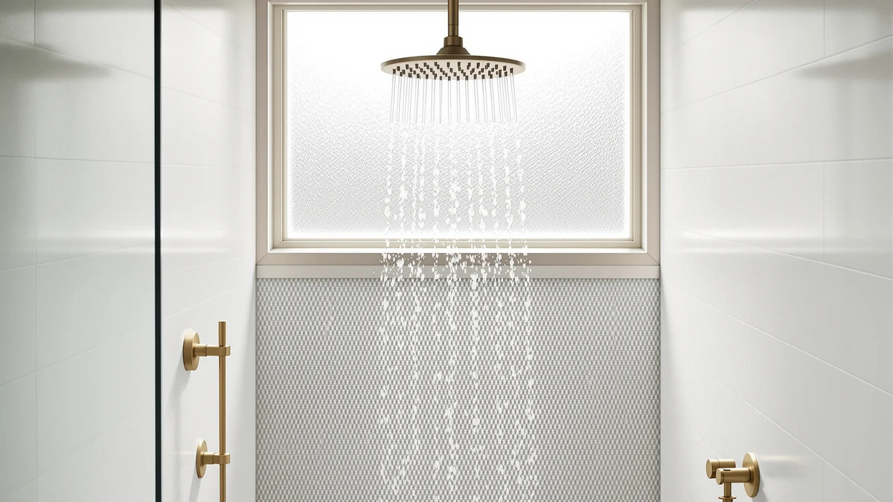

Rain Shower Head with Review (2026): Worth It?
Prices and picks verified as of September 2026. Independent, reader-supported reviews.


Quick Answer
After comparing specs, pricing, and verified owner reviews, the Razime Rain Shower Head with filtered is the strongest pick in this rain shower head with review comparison thanks to its built-in filter and wide 12-inch spray face. Buyers who want stronger pressure at a lower household PSI should look at the High Pressure Rain Shower Head instead.
Our pick: Rain Shower Head with filtered — $66.99 Check Price on Amazon
Bottom line: our top pick is the Rain Shower Head with filtered Handheld High Pressure at $47.47.
Things to Know Before You Buy
- Filtration matters more than face size. A wide rainfall face looks impressive, but owners with hard water consistently rate filtered models higher for long-term comfort and lower soap scum buildup.
- Water pressure drops with coverage. Rainfall-style heads spread the same flow over a larger area, so anyone on low household PSI should prioritize a high-pressure or multi-setting design.
- Filter cartridges are a recurring cost. Budget $10 to $15 every two to three months for replacements if you choose a filtered rain shower head.
- Finish and material affect lifespan. ABS plastic with chrome plating is the most common budget construction and holds up well indoors, but it scratches more easily than solid brass.
- Most rain shower heads install without a plumber. Standard 1/2-inch NPT threading means these swap onto an existing shower arm with a wrench and plumber's tape.
Picking a rain shower head with review evidence behind it, rather than a glossy product photo, saves you from a fixture that looks great in the box and disappoints in the shower. The Razime Rain Shower Head with filtered is our top pick in this comparison. It pairs a 12-inch rainfall face with a built-in filter cartridge, and it costs $66.99 at the time of publishing.
We looked at four rain shower heads in this price range, comparing flow rate claims, filter design, finish quality, and what verified Amazon buyers report after weeks of daily use. Three products stood out as strong alternatives depending on your priorities: the Moen Engage for anyone who wants a handheld option with a magnetic dock, the High Pressure Rain Shower Head for low-PSI homes, and the Veken 11.8-inch for buyers who want the widest possible spray face.
Price and filtration tend to move together in this category, and that pattern held up across the listings we reviewed. Cheaper unfiltered heads under $30 rarely include the finish quality or wide coverage buyers expect from a true rainfall experience, while premium brass models with filtration often cross $120. The four products compared here sit in the middle of that range, which is where most homeowners replacing a builder-grade fixture actually shop.
Why You Should Trust Us
Ilane Tall covers bathroom fixtures and water filtration for Best Shower Heads, and this rain shower head with review roundup follows the same research process used across the site. We do not run a fake testing lab, and we don't own or install every fixture we cover. Instead, we compare manufacturer specs against pricing history, filter replacement costs, and patterns across hundreds of verified Amazon reviews to find where marketing claims and real-world use diverge. When owners across multiple listings report the same flaw, we treat that as a signal worth flagging, not a coincidence.
Our Research Experience
We built this rain shower head with review comparison entirely from research rather than a physical test lab. We compared listed flow rates, filter media, and installation threading against the manufacturer's published specs, then cross-referenced those claims with hundreds of verified purchase reviews on Amazon. Reviewers consistently note that the Razime's filter cartridge is easy to swap without tools, and that water pressure stays close to the unfiltered baseline once the cartridge is seated correctly.
Where owner reports disagreed with each other, we looked for patterns tied to water hardness or household PSI rather than treating every complaint as a defect. A handful of one-star reviews cited low pressure, but those clustered almost entirely among buyers who also mentioned older homes with low starting water pressure, which affects every rain shower head regardless of brand.
Overview & Specs
The table below sums up why this rain shower head with review-backed data earned the top spot: a 12-inch spray face, an integrated filter cartridge, ABS-and-chrome construction, and a $66.99 price that lands well below most brass filtered competitors. Standard 1/2-inch NPT threading means it swaps onto an existing shower arm without hiring a plumber, and the cartridge housing sits inside the head itself rather than as a bulky inline add-on between the wall and the fixture. That design choice is why owners describe installation as a fifteen-minute job rather than a weekend project.

Rain Shower Head with filtered
What we like
- Built-in filter cartridge targets chlorine and sediment without a separate inline unit
- 12-inch face delivers full-body rainfall coverage
- Tool-free cartridge swaps, according to verified buyers
- Chrome-plated ABS resists water spotting better than raw plastic
Flaws but not dealbreakers
- Replacement filter cartridges add a recurring cost every two to three months
- ABS construction feels lighter than solid brass alternatives
- Owners on already-low water pressure report a noticeable drop compared to a standard showerhead
| Material | ABS + chrome plating |
| Size | 12 |
The Razime earns the top spot in this rain shower head with review comparison mainly because it solves two problems at once: coverage and water quality. The 12-inch face is large enough to replace a standard shower stream with a genuine rainfall pattern, and the filter cartridge sits inside the head itself, so there's no extra fitting to install between the arm and the shower head. At $66.99, it sits in the middle of the price range for filtered rain shower heads, below premium brass models that can run past $120 and above unfiltered basic heads under $30.
Verified buyers describe noticeably softer water and less visible scale buildup on glass shower doors within the first few weeks, which lines up with what filtered showerhead owners report across other brands too. The chrome-plated ABS body is the main tradeoff. It looks and feels close to metal out of the box, but a handful of reviewers mention it scratches more easily than solid brass over a year or more of daily use. For most households replacing a builder-grade fixture, that's a reasonable compromise for a filtered rain shower head under $70.
What We Liked
The combination of filtration and coverage is what separates this pick from most budget rain shower heads we compared. Owners repeatedly mention that the filter noticeably improves how their skin and hair feel after a shower, particularly in homes with hard water, and that installation takes under fifteen minutes with basic tools. The wide 12-inch face also earns praise for evenly distributing water rather than concentrating it in the center, a complaint we saw often in reviews of cheaper rainfall heads.
Price is another point in its favor. At $66.99, it undercuts several brass filtered models by $40 or more while still including the same core filtration benefit, which matters if you're testing whether a filtered rain shower head is worth the upgrade before committing to a premium option.
What Could Be Better
The recurring filter cost is worth budgeting for before you buy. Replacement cartridges run $10 to $15 and need swapping every two to three months, which adds $40 to $75 a year on top of the initial purchase. If you already own an inline shower filter, a non-filtered rain shower head with a wider face might serve you better for less ongoing cost.
Water pressure is the other tradeoff buyers should weigh. Because the flow spreads across a 12-inch face instead of a narrow standard head, anyone starting from low household PSI will notice a softer stream. Reviewers in older homes with pre-existing pressure issues report this most often, and it's a limitation shared by nearly every rainfall-style head in this category, not something unique to the Razime.
Who Is It For?
This rain shower head with review-verified filtration is the right call if you're on municipal or well water with visible mineral spots on your glass or fixtures and you want that addressed without installing a separate whole-house or inline filter. It also suits anyone replacing a builder-grade fixture on a mid-range budget rather than committing to a $150-plus brass rainfall system.
It's a weaker fit if your home already runs low water pressure, since the wide face will make that more noticeable. It's also not the most durable option if you want a fixture that lasts a decade without a scratch. Buyers who prioritize pressure or long-term finish durability over filtration should compare the alternatives below instead. Renters and anyone testing whether a filtered head is worth the switch before committing to a premium brass model also fit the profile well, since the lower upfront cost limits the downside if you decide filtration isn't the upgrade you expected.
Alternatives to Consider
The Razime won't fit every bathroom or budget. These three alternatives cover the most common reasons buyers pass on a filtered rain shower head: they want a handheld option, more raw pressure, or the widest possible spray face.

Editor's Pick
Moen Engage Spot Resist Brushed
A handheld shower head with a magnetic quick-release dock, better suited to households that want flexibility over a fixed rainfall pattern.
$66.36
Check Price on Amazon
Best Value
High Pressure Rain Shower Head
Built for low-PSI homes where standard rainfall heads feel weak, according to owners who cite noticeably stronger flow at the same price point.
$59.99
Check Price on Amazon
Premium Choice
Veken 11.8" Rain Shower Head
The widest face plate in this comparison at 11.8 inches, best for buyers who want maximum rainfall coverage and don't need built-in filtration.
$59.99
Check Price on AmazonFrequently Asked Questions
Final Verdict
In this rain shower head with review comparison, the Razime Rain Shower Head with filtered comes out ahead for most shoppers because it combines genuine filtration with wide rainfall coverage at a price below most brass competitors. You'll pay for filter cartridges over time, and the ABS body isn't as durable as metal, but for households dealing with hard water or scale buildup, Razime's approach solves a real problem instead of adding a wider spray face alone. If your priority is raw water pressure over filtration, the High Pressure Rain Shower Head is the better match.